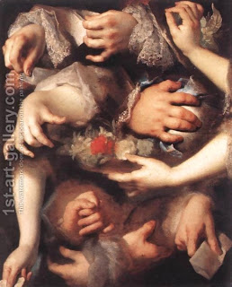

Menachot 10 - Flour Offering Done with the Left Hand
As we have learned , if one did the service with his left hand, it is invalid, but Ben Beteira says that he can re-do it with his right hand.
How do we know that? Rabbi Zeira explained. The verse states, " He brought near the flour offering and filled his palm from it ." From here we do not yet know whether it is his right or his left palm. However, when it says regarding a metsora (spiritual leper), " The Kohen will take from the oil and pour on the Kohen's left palm " - we understand that the Torah had to specify "left" in this case, but in all other cases, when not specified, "palm" means right palm. Thefore, Kemitzah, taking off a handfull of flour, must be done with the right palm.
They asked Rabbi Zeira, "but the word 'left' is need to teach the law of metsorah itself!?" He answered that there is another time that "left" is mentioned. They asked again, "but learn from here that palm is always left!" He answered that there is a third "left" mentioned, teaching that only metsorah needs the left palm.
Art: Nicolas de Largilliere - Study Of Hands